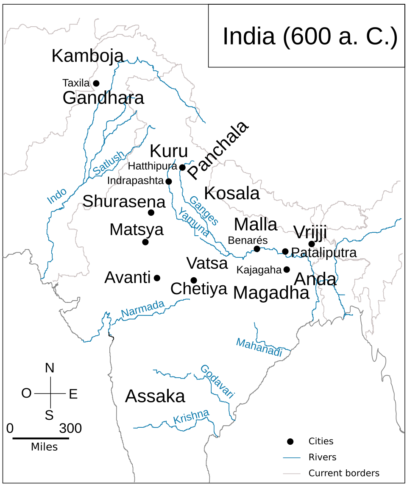
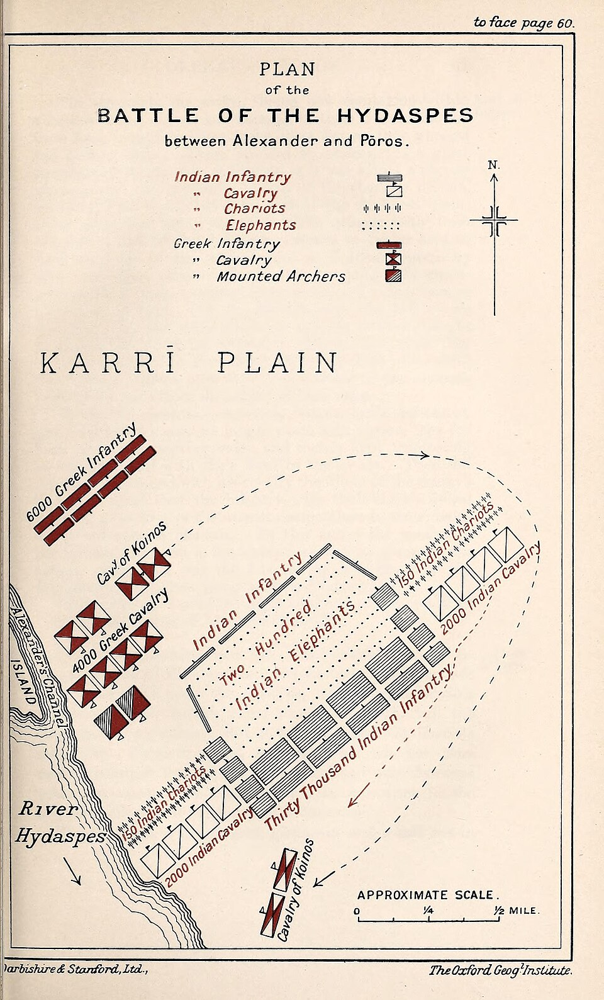

3. Mahajanapada Period 600 BC – 325 BC Second Urbanization • Age of Iron
The 6th Century BC witnessed the transition from pastoral tribes to territorial states (*Janapadas* and *Mahajanapadas*). Marked by the dramatic rise of Magadha into North India's foremost imperial power, alongside significant foreign incursions by the Achaemenid Persians (Darius I) and Macedonians (Alexander the Great).
1. Rich Natural Resources: Rich iron ore reserves in Rajgir/Chota Nagpur provided superior weapons and agrarian tools.
2. Strategic Capitals: Rajagriha surrounded by 5 natural hills (Giri-durga) & Pataliputra at the water confluence of Ganga, Gandak, Son, and Ghaghra (Jala-durga).
3. Military Weaponry & Elephants: First state to deploy war elephants on a vast scale in dense eastern jungles, and catapults like Mahashilakantaka and Rathamusala.

Geographic extent from Gandhara (Kabul/Peshawar) in North-West to Asmaka (Godavari) in South and Anga in the East.
The 16 Mahajanapadas: Capitals & Modern Locations
Verbatim list as catalogued in Lucent GK page 10. Frequently asked matching questions in APSC & UPSC.
| # | Mahajanapada | Ancient Capital(s) | Modern Geographical Location | Type & Lucent Exam Notes |
|---|---|---|---|---|
| 1 | Anga | Champa (ancient Malini) | Bhagalpur & Monghyr (Bihar) | Monarchy. Conquered by Bimbisara and annexed into Magadha. |
| 2 | Magadha | Girivraja / Rajagriha ➔ Pataliputra | Patna, Gaya, and Nalanda (Bihar) | The nucleus of ancient Indian empires; emerged supreme among all 16 states. |
| 3 | Kasi | Varanasi | Varanasi district (Eastern UP) | Renowned textile and horse trade hub; eventually absorbed by Kosala. |
| 4 | Vatsa | Kaushambi | Allahabad & Mirzapur (UP) | Ruled by famous King Udayana. Major junction on the Uttarapatha trade route. |
| 5 | Kosala | Sravasti (North) / Saketa (South) | Faizabad, Gonda, Bahraich (Eastern UP) | Ruled by King Prasenjit. Included tribal territory of Sakyas of Kapilavastu. |
| 6 | Saurasena | Mathura | Mathura region (Western UP) | Center of Krishna / Vasudeva worship. Ruled by King Avantiputra. |
| 7 | Panchala | Ahichchatra (North) / Kampilya (South) | Bareilly, Badaun, Farrukhabad (Western UP) | Divided into Northern & Southern halves by river Ganges; later shifted to republic. |
| 8 | Kuru | Indraprastha | Delhi, Meerut, & Haryana (Thanesar) | Legendary Epic state; transitioned into republican clan in Buddha's era. |
| 9 | Matsya | Viratnagar (modern Bairat) | Jaipur, Alwar, Bharatpur (Rajasthan) | Associated with cattle rearing; Ashokan minor rock edict found at Bairat. |
| 10 | Chedi | Suktimati / Sotthivati | Bundelkhand region (MP & Southern UP) | King Shishupala ruled here. A branch established Cheti dynasty in Kalinga (Kharavela). |
| 11 | Avanti | Ujjain (North) / Mahishmati (South) | Malwa & Nimar (Madhya Pradesh) | Magadha's most formidable rival; ruled by ferocious King Chanda Pradyota. |
| 12 | Gandhara | Taxila (Takshashila) | Rawalpindi & Peshawar (NWFP / Pakistan) | World-famous university of higher learning where Chanakya and Panini studied. |
| 13 | Kamboja | Rajapur / Hataka | Hazara district (Pak-Afghan frontier) | Celebrated for breeding superior cavalry horses. Republican constitution. |
| 14 | Asmaka / Assaka | Potana / Patali / Podana | Between Narmada and Godavari rivers (Maharashtra/Telangana) | Only South Indian Mahajanapada situated south of the Vindhyas. |
| 15 | Vajji | Vaishali | North of Ganga (Muzaffarpur & Darbhanga, Bihar) | Republic (Ganasangha): Confederation of 8 clans, foremost being Licchavis. |
| 16 | Malla | Kusinara & Pava | Deoria & Gorakhpur (Eastern UP) | Republic: Buddha achieved Mahaparinirvana at Kusinara; Mahavira at Pava. |
The Rise of Magadha: Dynasties & Monarchs
How three pre-Mauryan dynasties transformed Magadha into India's powerhouse.
Haryanka Dynasty
• Founder. First Indian king who maintained a regular standing army (*Seniya*).
• Used matrimonial alliances: Kosala (*Mahakoshaladevi*, received Kasi as dowry), Licchavi (*Chellana*), and Madra (*Khema*).
• Sent physician Jivaka to treat Avanti King Pradyota for jaundice.
• Built the fortified city of New Rajagriha.
• Imprisoned and killed his father Bimbisara.
• Defeated Kosala and waged a 16-year war against Vaishali with secret weapons: Mahashilakantaka (war engine catapult) and Rathamusala (scythed chariot).
• Convened the First Buddhist Council (483 BC) at Sattapani cave, Rajagriha.
• Founded Pataliputra at the sacred confluence of the Ganga and Son rivers.
• Shifted the royal capital from Rajagriha to Pataliputra.
Shishunaga Dynasty
• Originally a viceroy of Banaras, elevated by citizens disgusted with patricidal Haryanka kings.
• Greatest Achievement: Finally crushed the 100-year rivalry with Avanti and annexed it into Magadha.
• Temporarily shifted the capital to Vaishali.
• Shifted the capital permanently back to Pataliputra.
• Convened the Second Buddhist Council (383 BC) at Vaishali, presided over by Sabakami.
• Murdered in his capital by the founder of the Nanda dynasty.
Nanda Dynasty
• First Historical Empire Builder: Uprooted all old Kshatriya kingdoms, earning titles Sarvakshatrantaka and Ekarat (Sole Monarch).
• Conquered Kalinga (substantiated by the Hathigumpha inscription of Kharavela mentioning his canal construction).
• Last Nanda ruler. Called Agrammes or Xandrames by classical Greek writers.
• Reigned during Alexander's invasion of the Punjab.
• Maintained a colossal army (200,000 infantry, 20,000 cavalry, 2,000 chariots, 3,000–6,000 war elephants).
• Overthrown by Chandragupta Maurya and Chanakya.
Foreign Invasions: Iranian (Persian) & Macedonian
How external contacts transformed Indian commerce, writing systems, and political integration.
Iranian Invasion – Darius I (518 BC)
The Achaemenian king Darius I (Darayavahush) invaded North-West India in 518 BC and conquered the territories of Punjab, west of the Indus, and Sindh.
The Indian province (*Hindush*) became the 20th and richest Satrapy of Darius's empire, yielding an annual tribute of 360 talents of gold dust (one-third of total empire revenue).
- Introduced the Kharosthi script (derived from Aramaic, written right-to-left) into NW India.
- Persian bell-shaped capitals and polished stone pillar techniques directly inspired Ashokan art.
- Stimulated maritime and overland trade with the Persian Gulf.
Alexander's Invasion (326 BC)

• Ambhi (King of Taxila): Submitted without fighting and offered assistance.
• Battle of Hydaspes: Porus of Jhelum-Chenab doab put up heroic resistance before surrender.
• Mutiny at the Beas (Vipas): War-weary troops, terrified of reports of Dhana Nanda's 6,000 elephants in the Gangetic plain, refused to advance. Alexander was compelled to turn back.
• Alexander died at Babylon in 323 BC at the age of 32.
Revision Flashcards & Practice MCQs
Direct questions testing your retention of the 16 states, Magadhan rulers, and invasions.